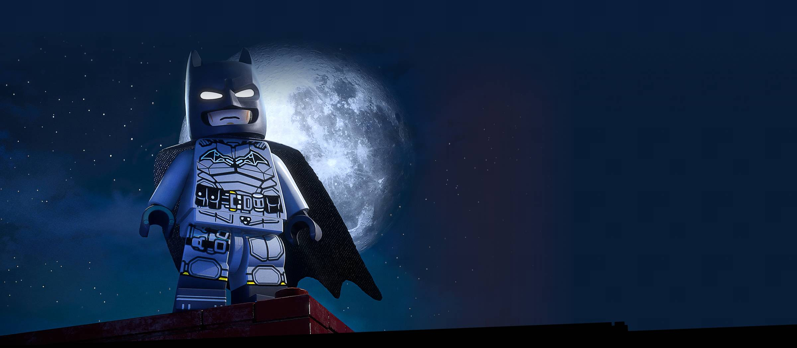

Es un juego de acción y aventura de 2026 desarrollado por Traveller's Tales y publicado por Warner Bros. Games. Es la cuarta entrega de la serie de videojuegos Lego Batman, y presenta una historia original inspirada en cómics, películas y otros medios de la franquicia Batman.
Legacy of the Dark Knight utiliza Unreal Engine 5 en lugar del motor de juego propietario de TT Games, y se inspira mucho en Batman: Arkham, otra serie de videojuegos de Batman. Anunciado en la Gamescom de 2025, se lanzó para PlayStation 5, Windows y Xbox Series X/S el 22 de mayo de 2026, con una versión para Nintendo Switch 2 prevista para el 18 de septiembre de 2026. El juego recibió críticas generalmente favorables.
Asómate bajo la capucha junto al equipo de TT Games y DC para descubrir cómo se construyó LEGO® Batman™: El Legado del Caballero Oscuro, ladrillo a ladrillo. Descubre cómo décadas de cómics, películas y recuerdos fundamentales se han trasladado al juego para crear esta historia definitiva de Batman desde sus orígenes hasta su leyenda.
La batcueva es la guarida secreta del mismísimo superhéroe... y una gran zona de recreo. Ponte trajes icónicos, utiliza artilugios impresionantes, mejora tus habilidades y conduce vehículos de todas las etapas de la historia de Batman.
Los héroes y villanos de Gotham se enfrentan cuando Batman forma equipo con la batfamilia para enfrentarse al Joker, el Pingüino, Dos Caras, Mr. Freeze y muchos otros. Lucha en solitario o con un amigo para disfrutar del juego cooperativo local.